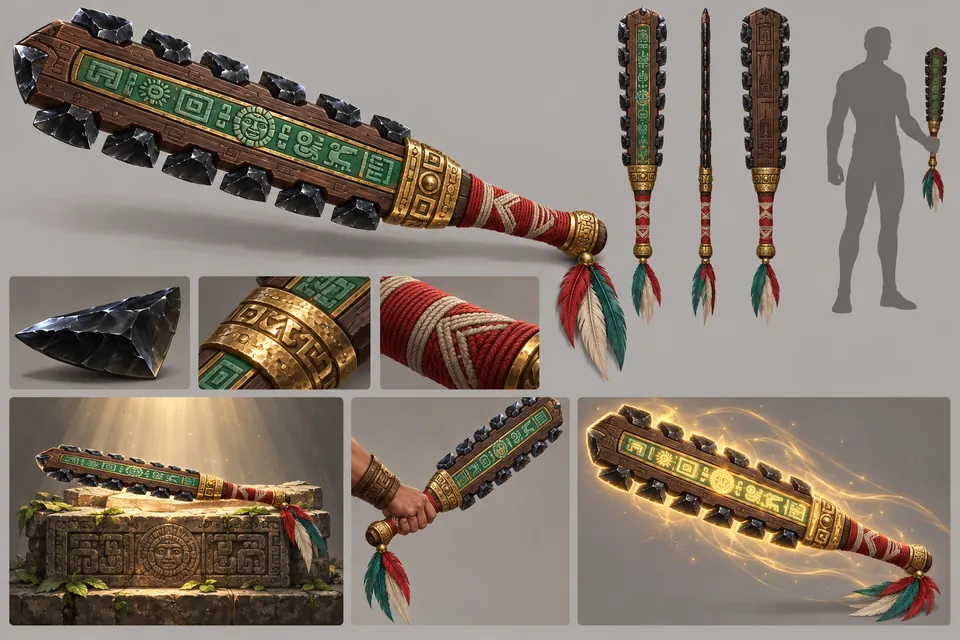
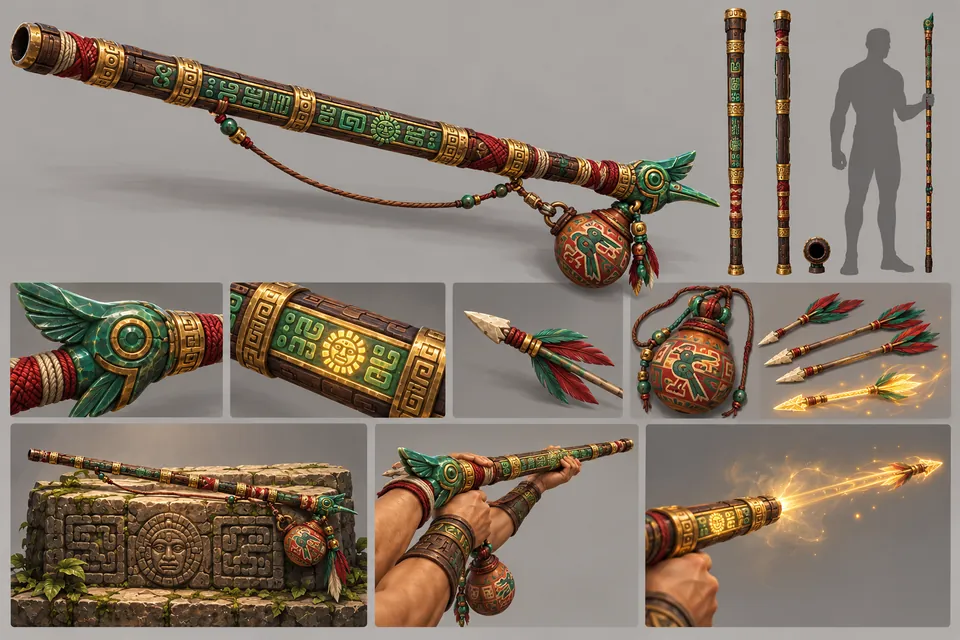
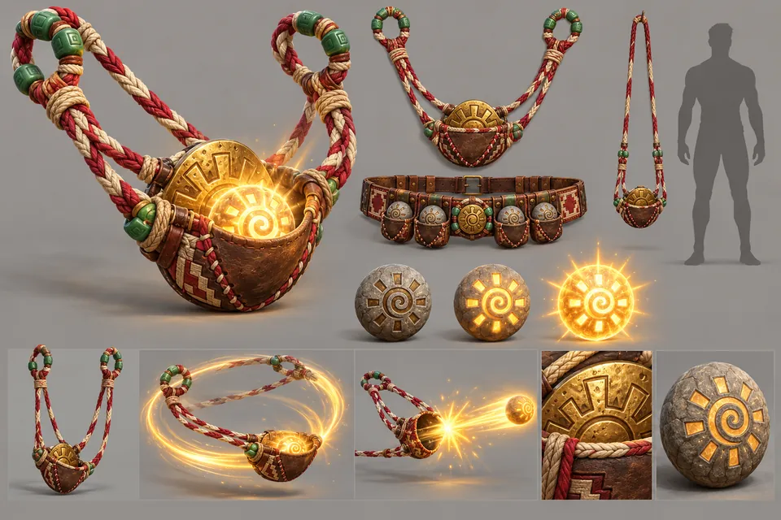
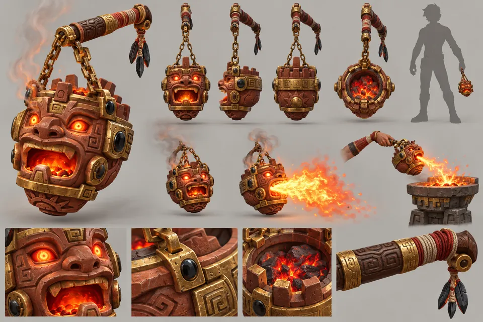
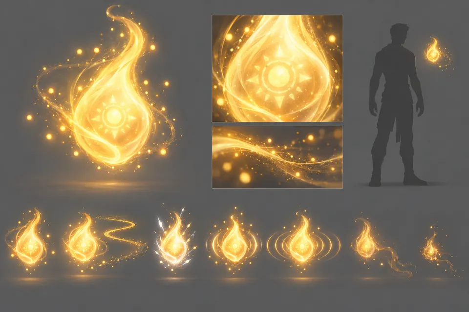
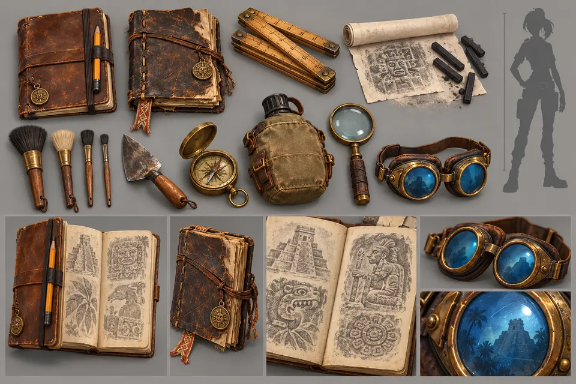

W01
Obsidian-Macuahuitl
Die Nahkampfwaffe: Obsidianklingen, Goldbänder und ein Glyphenstreifen aus Jade
Start / Kunst & Assets
Kunst & Assets
Waffen, Kugeln, das Geisterlicht und die Feldausrüstung.
Die Gegenstände, um die sich die Geschichte dreht: die Waffen der Kletterer, die Kugeln, K'in und die Ausrüstung, die Kaya von ihrer Mutter geerbt hat.

W01
Die Nahkampfwaffe: Obsidianklingen, Goldbänder und ein Glyphenstreifen aus Jade

W02
Die erste Fernkampfwaffe, mit einem Mundstück als Jade-Kolibri und einem Köcher aus Kürbis

W03
Eine Schleuder zum Aufladen; ihre Steine leuchten umso heller, je länger sie laden

W04
Ein Weihrauchbrenner des Feuergottes, der einen kurzen Flammenkegel ausstößt

W05
Feuer, Erde, Wind und Wasser, mit den leuchtenden Brustemblemen, die sie hinterlassen

W06
Das hellste Objekt im Spiel, in einer Wiege aus vier gemeißelten Händen

W07
Das Begleitlicht und seine Effektzustände

W08
Notizbücher, Abriebset, Pinsel, Kompass und Schutzbrille